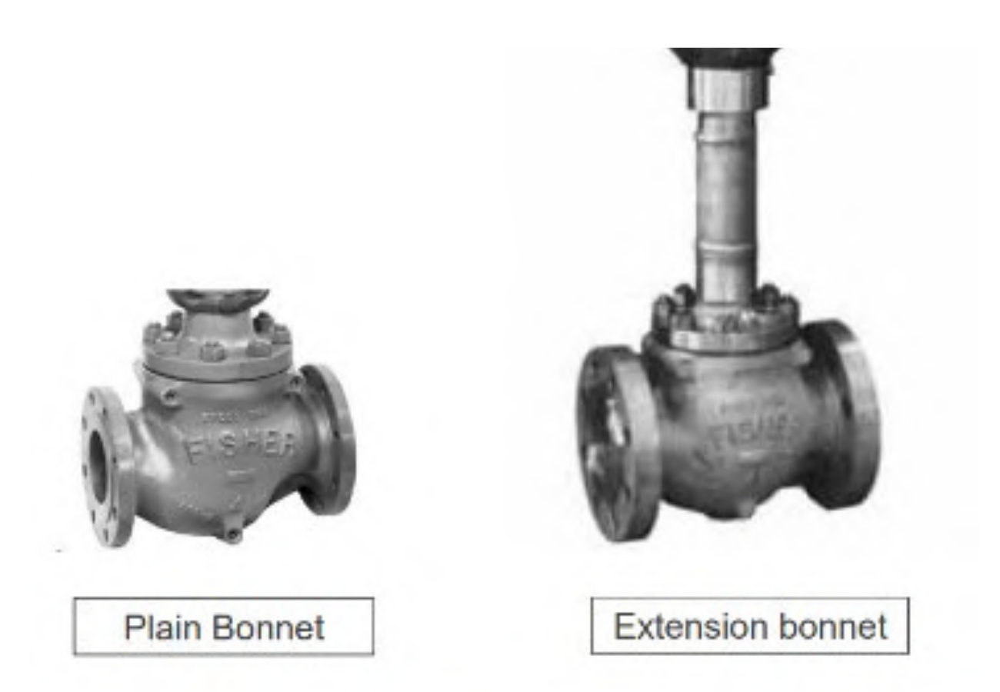

Bonnet Types — Standard, Extension & Bellows-Seal
| Bonnet type | Answers | Construction note |
|---|---|---|
| Standard | Neither question — near-ambient service | The baseline assembly, unmodified |
| Extension — cast | High-temperature extreme | Dissipates heat well via emissivity |
| Extension — fabricated | Cryogenic/cold extreme | Thin-wall stainless tubing minimizes heat influx |
| Bellows-seal | Leakage isolation, not temperature | Isolates the stem entirely; standard/environmental packing box retained above as a catastrophic-failure backup only |

After Control Valve Handbook, 6th ed., §3.3 (bonnet types) and Fig. 3.20 (p.66, general illustration only). Component Index: cvh-cmp-bonnet-variations.